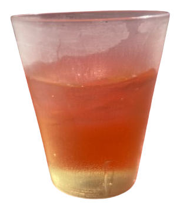
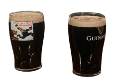
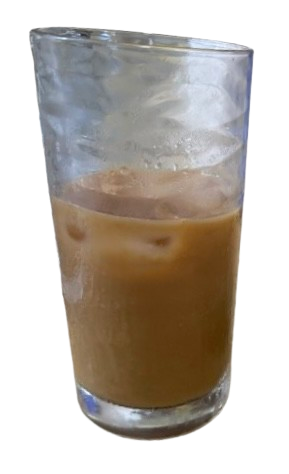
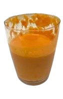
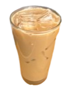
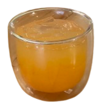
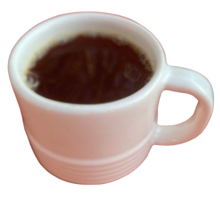
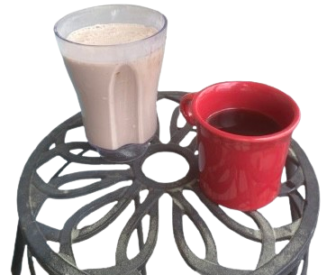
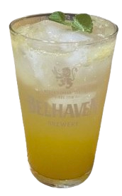

I believe this was a cold brew from Blanchard's Morris St. location. Ask for "for here glass, please."
Slight coffee hiatus this week... This oolong tea was perfect for when you're at a cafe and don't want another coffee "smooth and energizing" - very ideal. They use the cool tea steeper here and have cute little timers (set to roughly 2 minutes).

'Guinness is a stout that originated in the brewery of Arthur Guinness at St. James's Gate, Dublin, Ireland, in the 18th century.' Wikipedia
They say it's good paired with a light meal. I say it's best paired with a game of 8 ball and your mates. (enjoy cold in a beatle's theme pub)
For the past month I haven't had any alcohol and instead having this every night. 8 oz of tonic water and about 1 oz of lime juice and some ice (lime rind as needed). Bonus points for a bachelorette-party-energy pint glass.
Made this iced maple latte with oat milk using evan's Ninja espresso machine which I'm plesantly suprised with the shot it pulls.
Here's a unique one - garam masala tomato soup. Took a sip before I snapped a photo. Jennie made me make a sign for this special. I had a hard time spelling it ... even still is it 'marsala' or 'masala'? Fact -> spelled backwards it is 'marag alasam'
A maple latte with oat milk I made myself at work. The maple syrup is from VA ... that's the furthest south you can get it!
A great NA cocktail is what Jennie coined as a 'health' tonic. Recently, at work, I've been tasked with making tumeric, ginger, carrot juice with cayenne, black pepper, lemon, and pressed coconut water - or 'immunity shots' like at the grocery. Combined with a little tonic and you've got an excellent drink.
Formely known as 'the dollar-cup' this is a medium roasted cup of joe, black as midnight on a moonless night.
Here we have our first guest appearance by french canadian singer/songwriter Cameron. On the left, a frozen protein-oriented beverage containing: banana, yogurt, water, whey protein powder ("gonna buy plant based next time, I think." - cam), powdered peanut butter ("?" - your correspondence), honey. On the right, we have a cup of coffee (beans sourced from Rostov's).
An orange juice and tonic water beverage served with a mint leaf served in a Belhaven half pint glass (try Belehaven Black). Once my mother gave my grandmother a gallon freezer bag full of 'mint' leaves where were shortly returned after my grandmother accused her of giving her a bag of weeds. The legitimacy of this claim plagues my family to this day.
{kind=link}